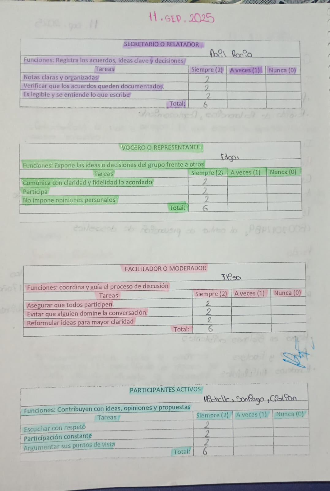
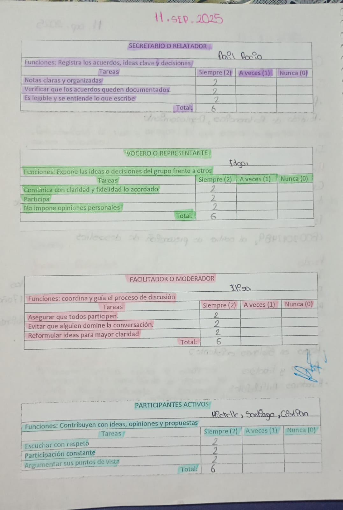

Definicion de la Materia
En la materia de Humanidades el aprendizaje se desarrolla a través del análisis y la reflexión sobre la organización social y política. Durante el curso se estudiaron conceptos como política y contrato social, lo que permite comprender cómo surgen las normas y acuerdos que regulan la convivencia en la sociedad. A lo largo de la materia se compararon distintas formas de gobierno, como el totalitarismo, la democracia y la oligarquía, para identificar sus características y efectos en la vida social. También se abordaron temas como poder, esclavitud, sometimiento y civilidad, fomentando una reflexión crítica sobre la libertad, la autoridad y los derechos humanos. Finalmente, se analiza la relación entre la sociedad civil y las instituciones, fortaleciendo el pensamiento crítico y la comprensión de cómo las decisiones políticas influyen en la vida cotidiana.
Temas Vistos en Clase
- Politica | Contrato Social
- Totalitarismo | Democracia
- Poder | Esclavitud
- Sometimiento | Civilidad
- Sociedad civil | Institucion
- Oligarquia
Trabajos mas Relevantes
 



Proyectos
Formulario
A continuación se muestra un formulario para recopilar opiniones o evidencias relacionadas con la materia.